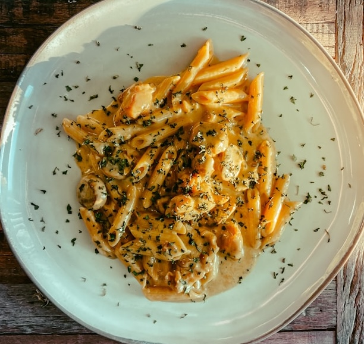

The famous copycat Olive Garden Chicken is a rich, creamy, 5-ingredient slow cooker meal. It combines chicken breasts, a full bottle of Olive Garden Italian dressing, cream cheese, and Parmesan, cooked until tender, shredded, and tossed over pasta.